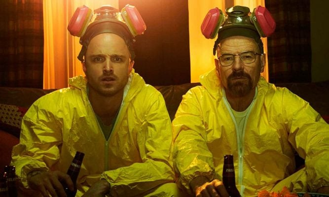

A série já ganhou inúmeros prêmios e indicações, incluindo dez Primetime Emmy Awards com um para Melhor Série Dramática.
Em 2010 e 2012, Breaking Bad ganhou o prêmio TCA de Excelência em Drama , bem como o prêmio TCA para o Programa do Ano em 2013. Em 2009 e 2010, a série ganhou o Satellite Award para Melhor Série de Televisão - Drama, juntamente com o Saturn Award de Melhor Série de Televisão por Cabo sindicalizado em 2010, 2011 e 2012. A série ganhou o Writers Guild of America Award para Televisão: Série Dramática . tanto em 2012 e 2013. Em 2013, foi nomeado nº. 13 na lista dos 101 mais bem escrito séries de TV de todos os tempos pelo Writers Guild da América e venceu, pela primeira vez, o Primetime Emmy Award para Melhor Série Dramática. No geral, o show ganhou 45 prêmios da indústria e foi nomeado para 113. Em 2014, Bryan Cranston, Aaron Paul e Anna Gun ganharam o Primetime Emmy Award por melhor ator, melhor ator e atriz coadjuvantes em serie dramática.